A partir de agosto 2019
tendremos un nuevo calendario escolar, modificando nuestras actividades a partir de enero 2020.
¡Prepárate!
PRINCIPALES CAMBIOS:
A partir de 2020, el semestre enero-mayo ahora será febrero-junio.
Contaremos con un nuevo período para cursos intensivos de INVIERNO en el mes de enero, iniciando en el 2020.
Con este nuevo calendario tendremos:
Mayor alineación con los calendarios de universidades con las que tenemos convenios de intercambio y proyectos.
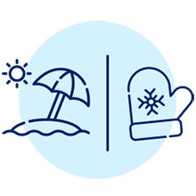
Mayores oportunidades académicas y de desarrollo, al contar con períodos balanceados en tiempo entre los semestres, que se pueden utilizar para los cursos intensivos en verano (julio) y en invierno (enero).
Calendario
Calendario de período semestral para preparatoria, profesional y posgrado
Primer día de clases periodo semestral
Primer día de clases periodo intensivo
Último día de clases Plan 2019
Último día de clases Planes anteriores 2019
Evaluaciones finales Planes anteriores 2019
Semana Tec (Sólo alumnos de planes 2019)
Semana i (Sólo alumnos de planes anteriores a 2019)
Fin de cursos periodo intensivo
Graduaciones
Asuetos
Receso académico
Junio 2019
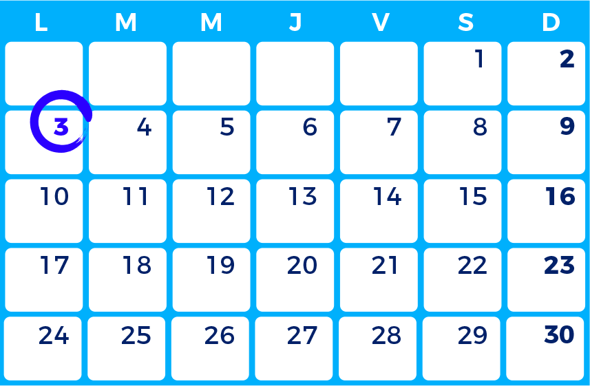
- Lunes 3 de junio: primer día de clases periodo intensivo.
Julio 2019
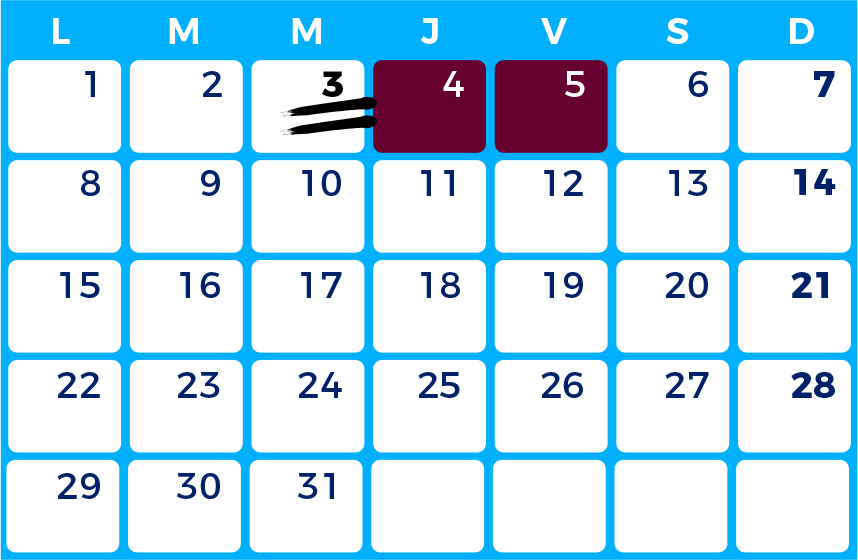
- Miércoles 3 de julio: último día de curso periodo intensivo.
- 4 y 5 de julio: evaluaciones finales Planes anteriores 2019.
Agosto 2019
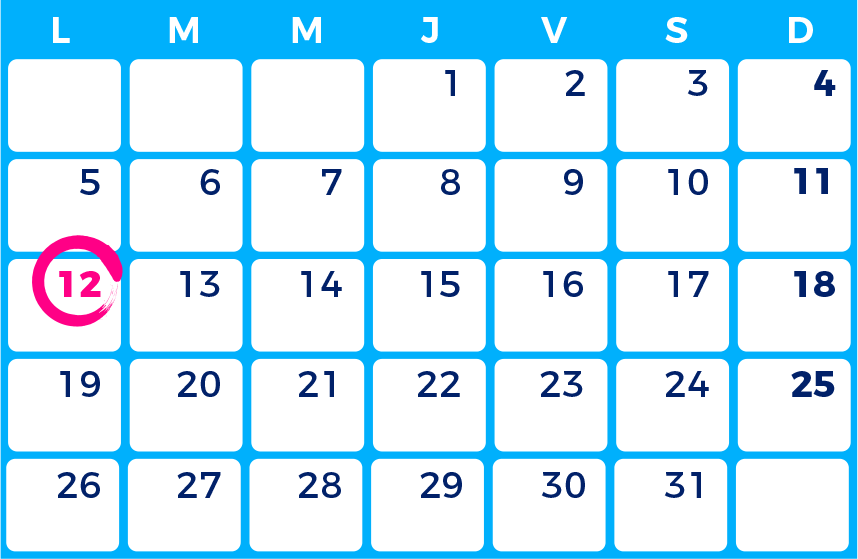
- Lunes 12 de agosto: primer día de clases periodo semestral.
Septiembre 2019
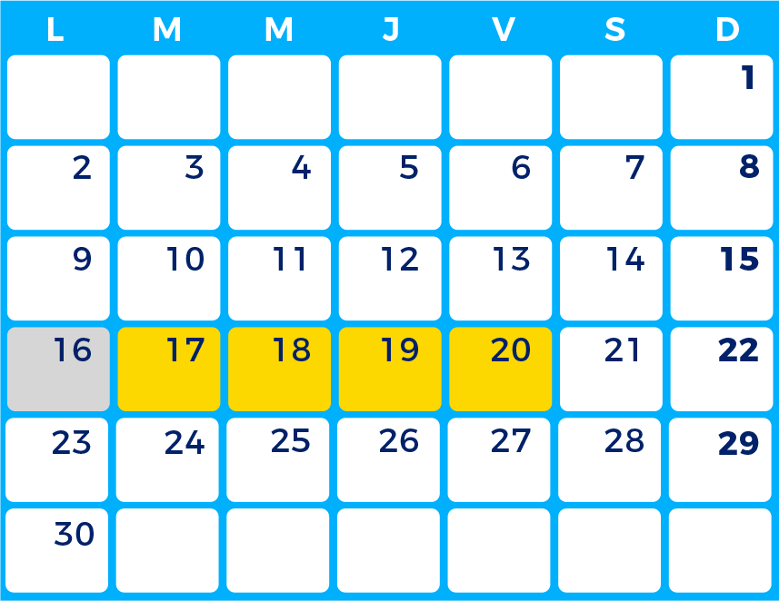
- Lunes 16 de septiembre: asueto.
- 17 al 20 de septiembre: Semana Tec.
Octubre 2019
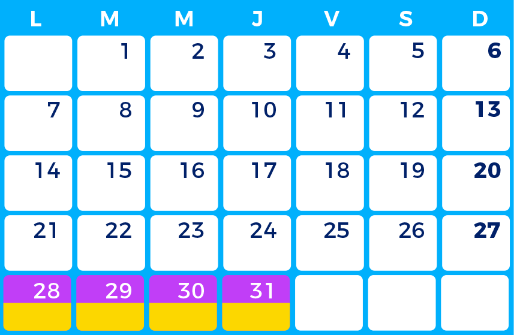
- 28 de octubre a 1 de noviembre: Semana i.
- 28 de octubre a 1 de noviembre: Semana Tec.
Noviembre 2019
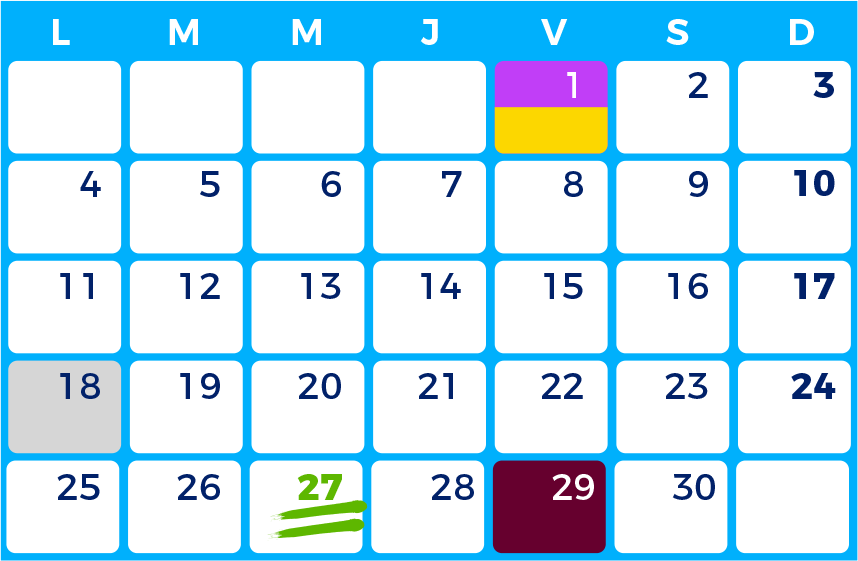
- Lunes 1 de noviembre: último día Semana Tec y Semana i.
- Lunes 18 de noviembre: asueto.
- Miércoles 27 de noviembre: último día de clases Planes anteriores 2019.
- Viernes 29 de noviembre: inicia evaluaciones finales Planes anteriores 2019.
Diciembre 2019
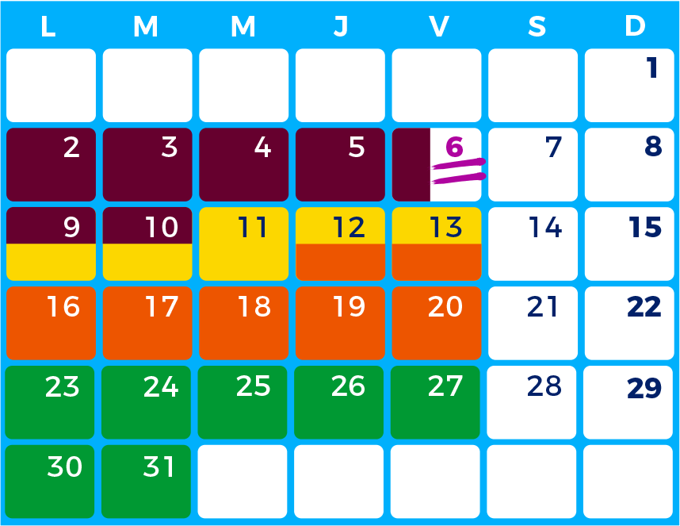
- 29 de noviembre al 10 de diciembre: evaluaciones finales Planes anteriores 2019.
- Viernes 6 de diciembre: último día de clases Plan 2019.
- 9 al 13 de diciembre: Semana Tec.
- 12 al 20 de diciembre: graduaciones.
- 23 diciembre 2019 al 3 de enero 2020: receso académico.
Enero 2020
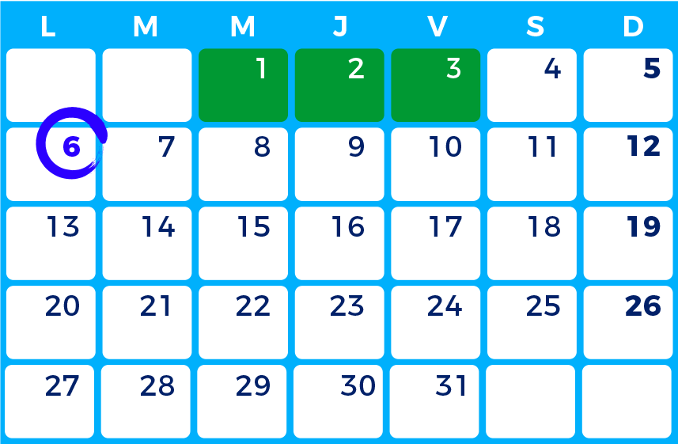
- 23 diciembre 2019 al 3 de enero 2020: receso académico.
- Lunes 6 de enero: primer día de clases periodo intensivo.
Febrero 2020
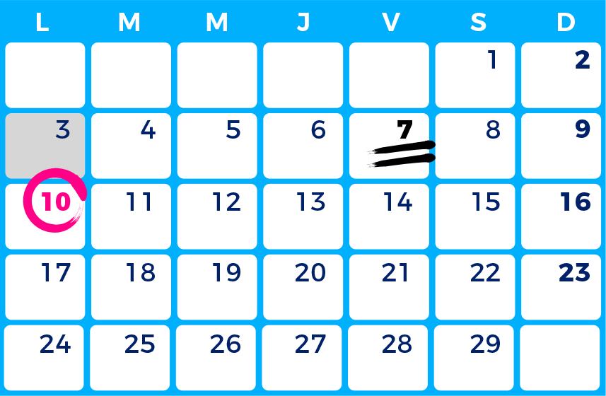
- Lunes 3 de febrero: asueto.
- Miércoles 7 de febrero: último día de curso periodo intensivo.
- Lunes 10 de febrero: primer día de clases periodo semestral.
Marzo 2020
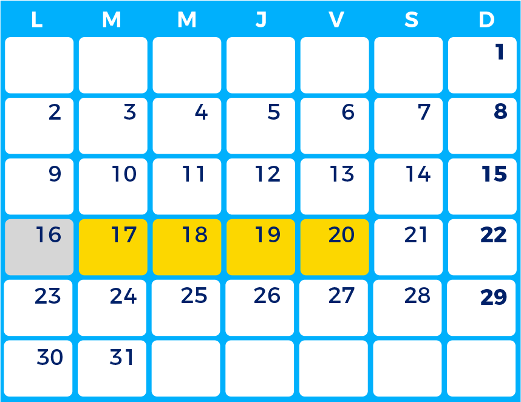
- Lunes 16 de marzo: asueto.
- 17-20 de marzo: Semana Tec.
Abril 2020
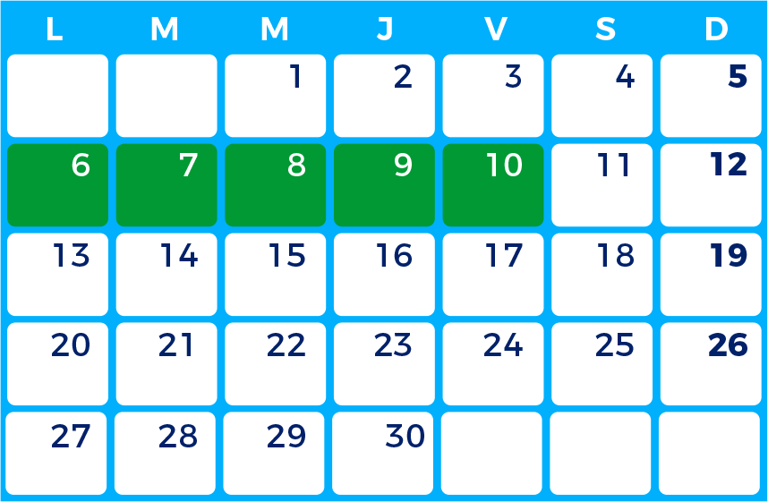
- 6 al 10 de abril: receso académico.
Mayo 2020
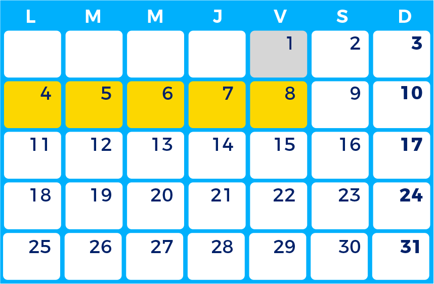
- Viernes 1 de mayo: asueto.
- 4 al 8 de mayo: Semana Tec.
Junio 2020
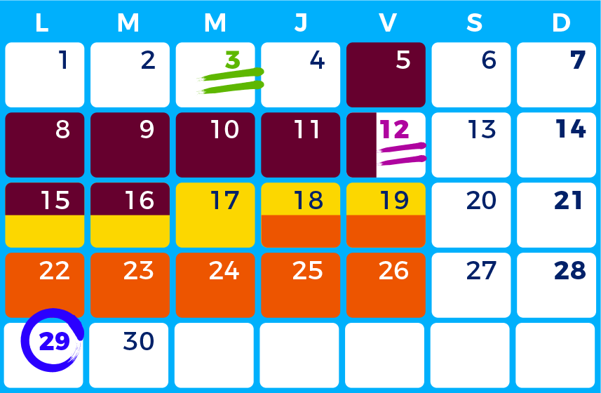
- Miércoles 3 de junio: último día de clases Planes anteriores 2019.
- 5 al 16 de junio: evaluaciones finales Planes anteriores 2019.
- Viernes 12 de junio: último día de clases Plan 2019.
- 15 al 19 de junio: Semana Tec.
- 18 al 26 de junio: graduaciones.
- Lunes 29 de junio: primer día de clases periodo intensivo.
Julio 2020
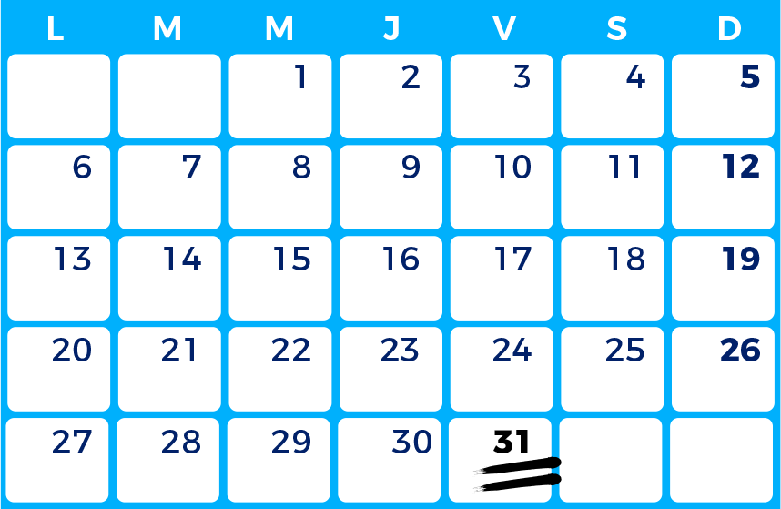
- 31 de julio: fin de cursos periodo intensivo.
En los calendarios trimestral y clínicos, no hay cambios.
Preguntas frecuentes
-
Si soy alumno con un plan de estudios anterior al 2019, ¿cambia mi calendario académico?
Sí, el calendario cambia para TODOS los alumnos de preparatoria, profesional y posgrado semestral, sin importar el plan de estudios al que pertenecen.
-
Para los que estudiamos la carrera de Medicina, ¿las clínicas se verán afectadas con el nuevo calendario?
No, el calendario para cursar las materias clínicas no tiene modificaciones y seguirá siendo como siempre.
-
Si estudio un posgrado trimestral, ¿mi calendario académico cambiará?
No, el calendario trimestral no cambia.
-
¿Estoy obligado a cursar algo en los períodos de invierno o verano?
No. Como hasta ahora, la participación en los cursos intensivos de invierno y verano es completamente opcional para los alumnos. Ahora habrá más oportunidades para quienes deseen recuperar o adelantar en estos períodos.
-
¿Habrá algún cambio en las fechas de las graduaciones en el 2019?
No, las graduaciones programadas en el 2019 se realizarán en mayo y diciembre, en las fechas publicadas previamente.
-
Si me gradúo en el 2020, ¿cuándo será mi graduación?
Para el semestre febrero-junio 2020, las graduaciones de preparatoria y profesional se llevarán a cabo en el mes de junio. Para el semestre agosto-diciembre 2020, la graduación se llevará a cabo en el mes de diciembre. Las fechas específicas serán publicadas por cada campus.
-
¿Qué pasará con los internships que realizábamos en verano?
Con el nuevo calendario, se deberán negociar nuevas fechas para los programas de internships en los que se desee participar a partir del 2020. Con las empresas de mayor participación, el Tec comunicará oportunamente el cambio para generar nuevas oportunidades equivalentes a las actuales.
-
¿Qué pasa con mis vacaciones en el nuevo calendario?
Las vacaciones continuarán acorde a las condiciones laborales y se podrán solicitar como siempre en la ruta: Mi espacio > Mi calidad de Vida > Mis Vacaciones. El nuevo calendario NO impacta en la cantidad de días de vacaciones que se tienen por ley y prestación.
-
Si soy profesor, ¿puedo impartir clase en los dos periodos intensivos del año (verano y invierno)?
Sí. Al igual que ahora, la labor de un profesor en período de receso puede ser impartir un curso intensivo. Como siempre, se deberá contactar al director de departamento anticipadamente para planear y confirmar la impartición en estos períodos.
-
Si soy profesor, ¿puedo tomar vacaciones en los períodos de invierno o verano?
Sí. Estos períodos son ideales para tomar las vacaciones sin afectar la impartición de un curso y a sus alumnos.